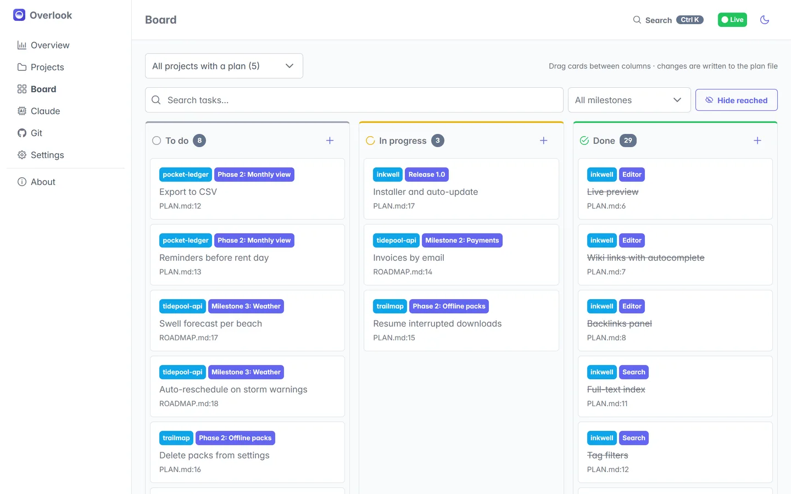
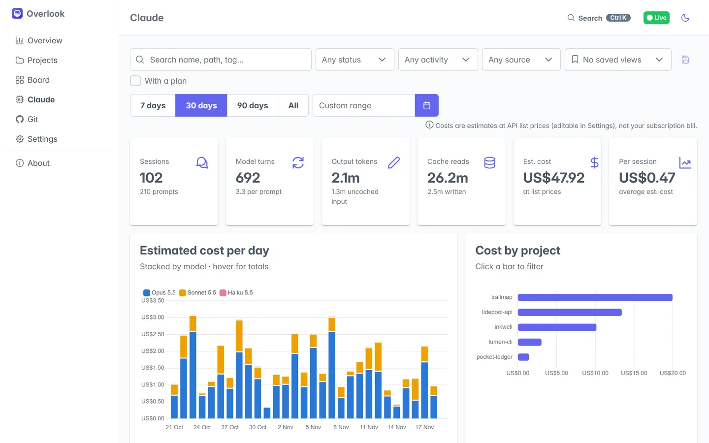
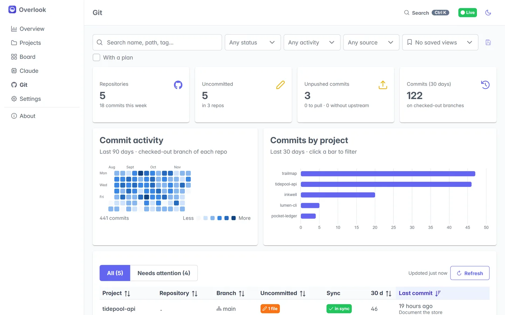

Found for you
Point it at your code. It finds the projects.
Pick the folders that hold your work. Every repo, CLAUDE.md or plan file becomes a project, merged with every folder you have used Claude Code in. Nothing to set up per project.
- Status from real activity: active, paused after two quiet weeks, done when every milestone is reached
- Live: new folders and edits show up as they happen

Plans become progress
Drag a card. Your plan file changes.
Overlook reads the Markdown plans you already keep, ## milestones and - [ ] tasks, and turns them into progress bars, burnup charts and a board. Move a card and the checkbox in the file is ticked. The file stays the source of truth.
- A backup, a conflict check and Undo on every write
- Works with
PLAN.md,ROADMAP.md,TODO.mdor names you choose

Claude Code usage
See where your tokens go.
Sessions, prompts, tokens and estimated cost per day, model and project, read from Claude Code’s own session logs on your computer.
- Filter by project, model and date range
- Costs are estimates at API list prices, not your subscription bill

Git at a glance
Every repo’s loose ends, in one list.
Uncommitted files, unpushed commits and a 90-day commit heatmap across all your repos.
- Read-only: Overlook never takes git’s lock or changes your repos
- No git installed? Projects and plans still work

Keyboard first
One shortcut to everything.
Jump to any page or project, open a project in VS Code or start Claude Code in it, from one search box. Try it on this page.
Local only
Nothing leaves your machine.
No account, no telemetry, no cloud. Overlook reads your files where they are. The only network call it can make is the update check, and you can switch that off.
- Listens on 127.0.0.1 only, with a per-launch token
- Open source (MIT): read every line on GitHub
Settings → Network activity
Update check: overlook-downloads.kennyrafael-cg.workers.dev, at start-up and once a day. You can turn it off.
Nothing else. Your code, plans, prompts and usage are never sent.
Install
Up and running in a minute.
Overlook isn’t code-signed yet (certificates cost money every year, and the app is free), so your system asks you to confirm it the first time. Here is exactly what you’ll see.
On Windows 10 and 11
-
Download and run the installer
Overlook-Setup-…-x64.exe, or-arm64.exeon Arm devices such as Surface Pro X or Copilot+ PCs. -
If you see “Windows protected your PC”
Click More info, then Run anyway.
A sketch of the warning: More info (1) shows the Run anyway button (2). -
Pick the folders that hold your projects
Overlook opens, shows which tools it found (git, VS Code, Claude Code) and scans the folders you choose.
Updates install themselves: Overlook checks for a new release at start-up and once a day, and asks before restarting.
On macOS 12 and later
-
Download the .dmg for your Mac and drag Overlook to Applications
Apple menu → About This Mac shows “Apple M…” (Apple silicon) or “Intel”.
-
Open it once, then click Done
macOS says it can’t verify the app. That’s expected for an app that isn’t notarized yet.
-
Allow it in Privacy & Security
Open System Settings → Privacy & Security, scroll to the message about Overlook, click Open Anyway and confirm with your password.
A sketch of System Settings: click Open Anyway (1) next to the message about Overlook. -
Allow Terminal control, once
The first time you use Start Claude Code, macOS asks whether Overlook may control Terminal (or iTerm). Click Allow.
Overlook tells you when a new version is out: download it and drag it to Applications again. Your settings are kept.
Does it send my code or plans anywhere?
No. Everything is read and stored on your computer. The only outbound request is the update check to overlook-downloads.kennyrafael-cg.workers.dev, listed in Settings → Network activity, and you can switch it off.
How does it read my plans?
Any Markdown file named PLAN.md, ROADMAP.md, TODO.md or CLAUDE.md (you can change the names in Settings). A ## heading with checkboxes under it is a milestone:
## Phase 1: Scaffold
- [x] Monorepo ← done
- [~] API ← in progress
- [ ] Web app ← to do
## ✅ Research ← reached, even without tasksMoving a card changes only that checkbox. Every write re-reads the file first, keeps a backup and offers Undo.
Do I need Claude Code?
No, but it is built for it. Without Claude Code you still get projects, plans, the board and git activity; the usage pages stay empty. Claude Code installed inside WSL is detected too.
Are the costs what I pay?
No. They are estimates at API list prices, worked out from the token counts in your session logs, so you can compare projects and models. On a subscription your bill is different. You can edit the prices in Settings.
Why does Windows or macOS warn about the app?
Signing certificates cost money every year, and Overlook is free. The installers are built and tested by an automated release process; the warning goes away once the app is signed, which is planned if there is enough interest.
Linux or iOS?
Not planned for now. Linux users can run it from source (npm install && npm start, then open it in a browser). iOS cannot read your local files, so a phone app would not be useful.
Is it really free?
Yes, MIT licensed. If there is demand, paid extras may come later; the current features stay free.
Take the overlook.
Every project you build with Claude Code, in one view. Free, open source and yours to keep.
Windows 10 and 11, macOS 12 and later. How to install
- Open sourceMIT license
- Local onlyNothing leaves your machine
- No accountNo sign-up, no telemetry
- Latest releaseWindows and macOS